コシーニャ（Coxinha）を作る
きっかけは「そういえばコシーニャってどうやって作るんだっけ」からYouTubeを検索したこと。そして以下の動画にあたり、思っていたより全然普通の材料でできるので作ることにした。
この動画を参考にやっていきます
まず中身を作っちゃいます。茹でるか、レンチンした鶏胸肉をフォークで裂いていきます。
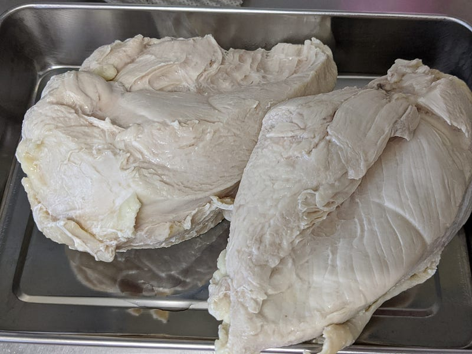
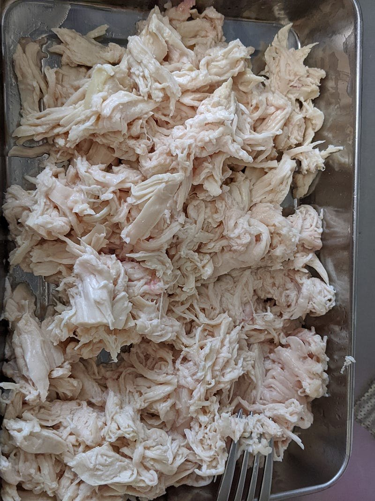
これを玉ねぎ、ニンニク、トマトと炒めて、塩胡椒、パプリカパウダーあたりで味を付けます。気持ち味は濃いめのほうが最後のコシーニャが美味しいです。自分はあと臭み取りに料理酒を入れました。
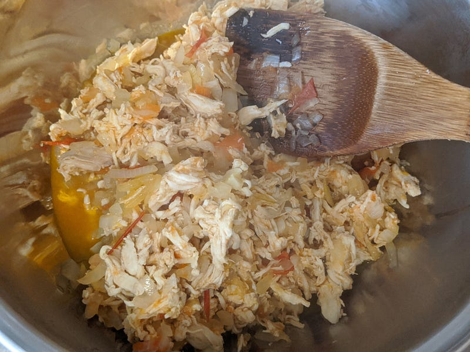
多分この画像よりもつと水分が少ない方がいいと思う。水分があると衣をつけるのが少し難しくなります。
次に衣を作っていきます。
チキンコンソメを溶いた水を250ml。残念ながら野菜コンソメしかなかったので今日はそれで代用。さらに牛乳120ml。この水が濁っているのは鶏肉のゆで汁を使ったからです。
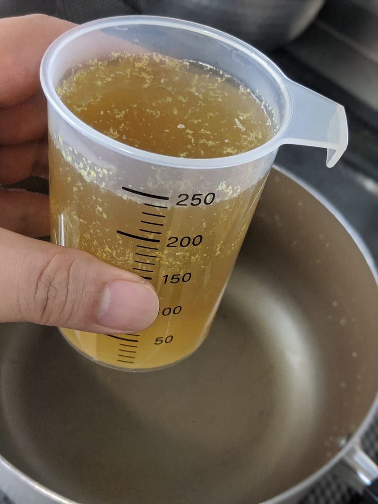
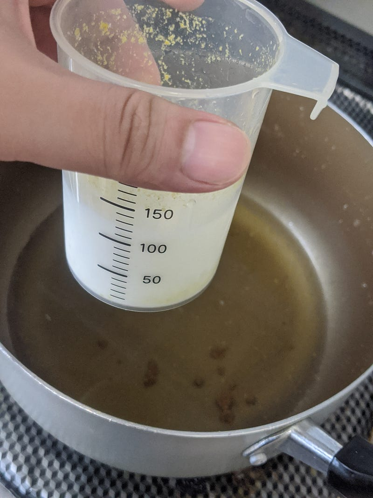
そこにマーガリン。30gとか
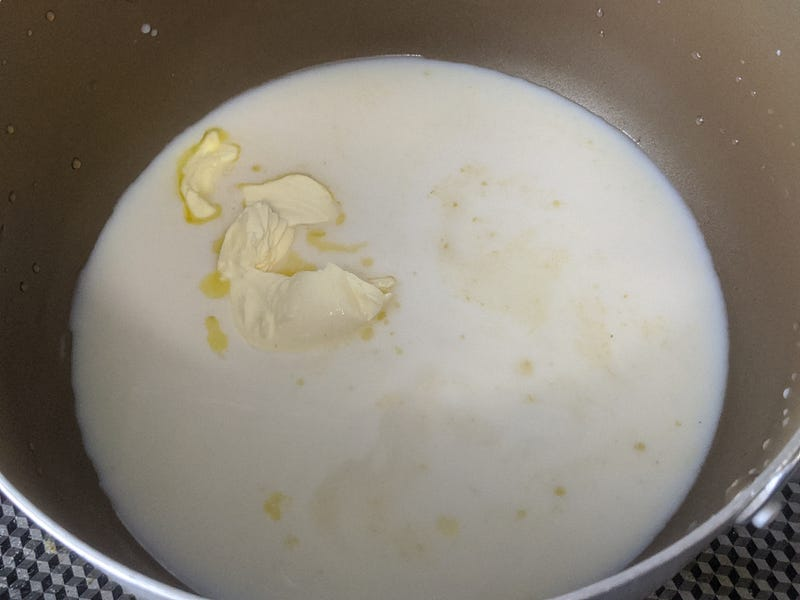
これを沸かします。なんか前にPao de Queijoを作ったときもそうだけど、この国のレシピは沸かした水で粉を溶くのが好きみたい。
火を弱火にして、そこにまず250gの小麦粉の半分くらい入れて混ぜます。動画では大分適当に混ぜててもダマが出来なかったのだけど、今回は結構できてしまった。小麦粉を事前にふるえばよかったのかも。
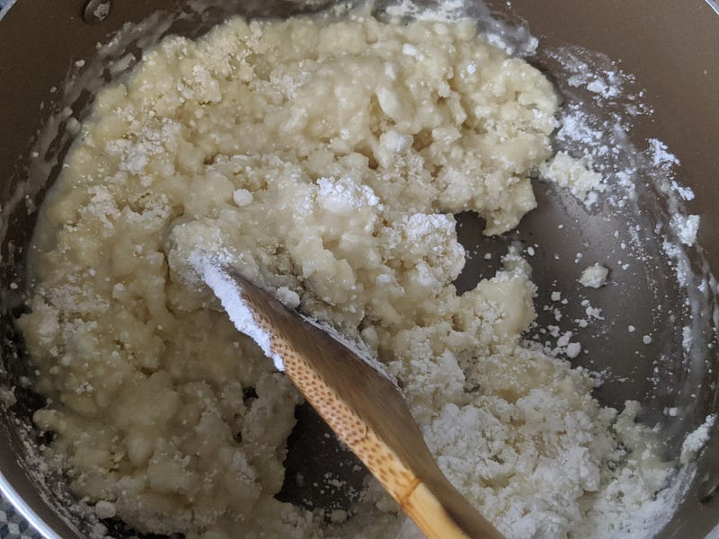
まあ、ダマができても（面倒だけど）ベシャメルと違ってあとでリカバリーできるし、わりと雑でも大丈夫。でもできないほうが楽です…
だいたい混ざったら残りの小麦粉も混ぜる。もっとこう、タピオカ粉とか入るのかと思ってたらただの小麦粉団子だった… ちなみにWikipediaとかをみるとタピオカ粉とかに言及されてるけど、今回小麦粉で作ってみて全く違和感なかったので、きっとリオデジャネイロの適当な店の適当なコシーニャは小麦粉でできてるんだと思う。タピオカ粉のほうがうまいのかもしれないけど。
まとまるようになったら別のところに生地をすくって、冷ましつつ少しこねてまとめます。ダマを処理するならこのタイミング。手でダマを分離しちゃって水分の着いた手でばらかしてやればあーらふしぎ… まぁ全部は取り切れなかったけど、だいたいなんとかなりました。
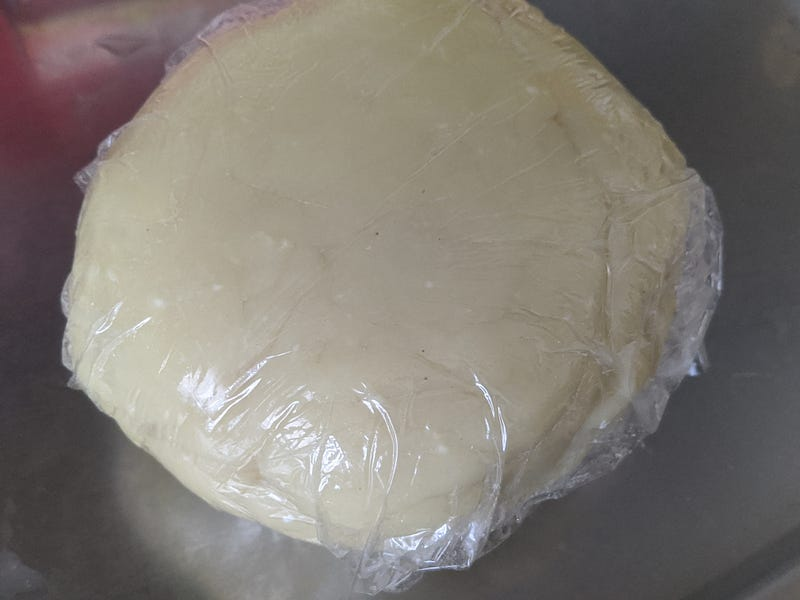
あとは乾燥しないようにサランラップしておきます。
あとはこの生地で具をつつんで揚げるだけなんだけど、その前にひとつ我が家的な事情でパン粉の処理をします。
うちのまわりのスーパーにはミラノカツレツみたいなのを作るための細かいパン粉が売ってないのだけど、今回欲しいのはまさにそれなので、パン粉をあえて粉々に潰します。すりこぎでゴリゴリ。
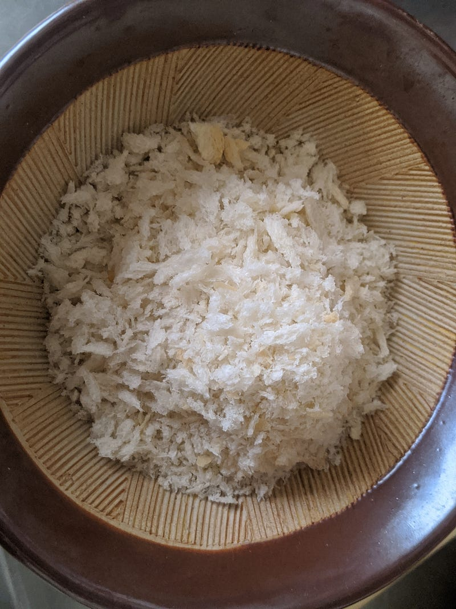
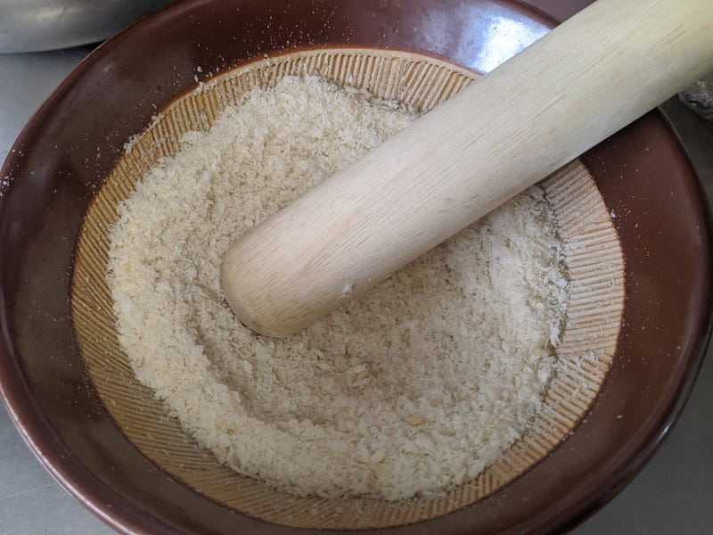
ここまできたら、成形の時間。手のひらに一塊の生地をとって、丸くしてから平たくします。そこに具を入れて、洋梨といか、ティアドロップ型に成形します。
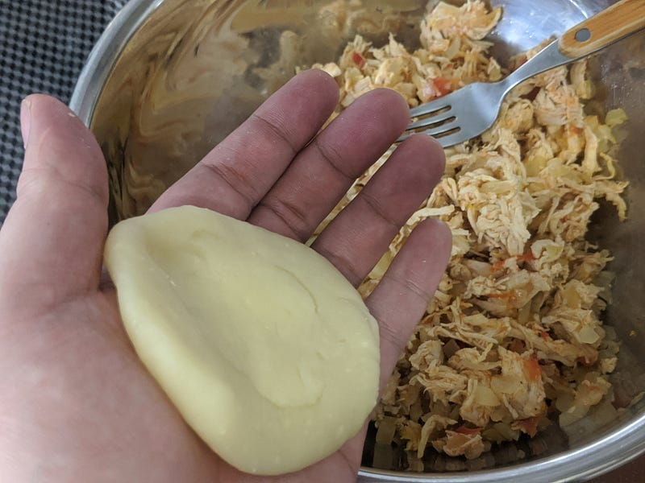
ティアドロップなのは理由はしらない。この鶏肉入りコシーニャは必ずこの形なんですよね。
衣はわりと厚くて大丈夫。そもそもそういう料理だし、薄くするのは難しいと思う、この皮。
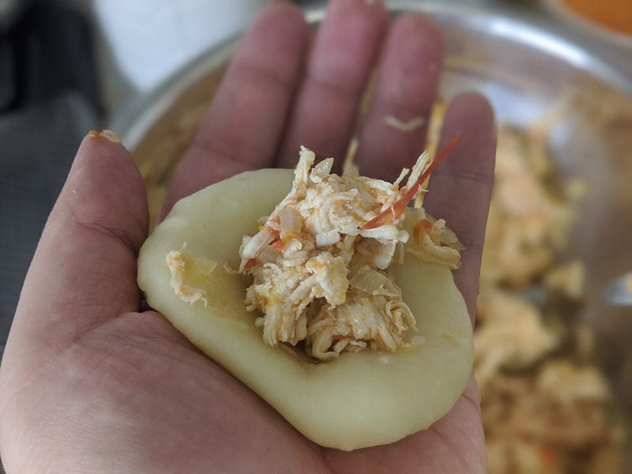
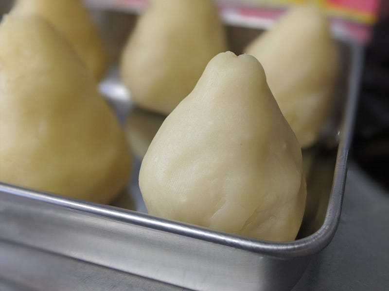
あとはこれに衣をつけて揚げます。片栗粉（スターチ）を溶かした水にコシーニャを潜らせて、それをパン粉に転がせば衣のできあがり。
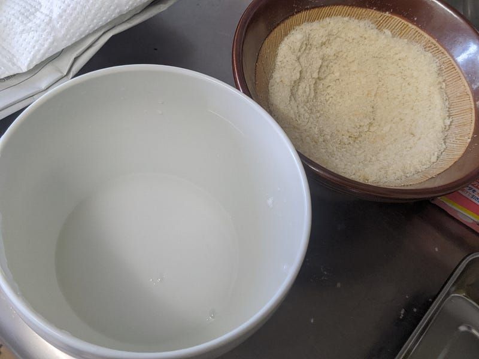
中身は火は通ってるのでよい色になるまであげたら出来上がり。
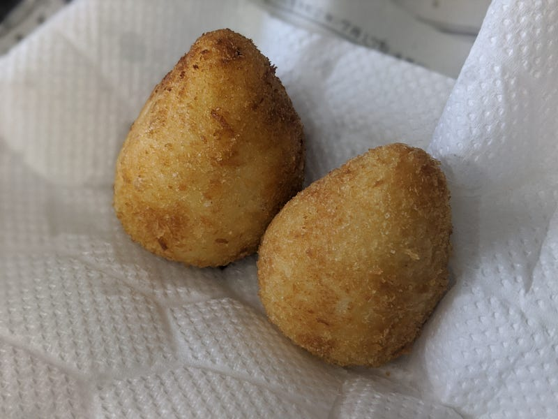
この小麦粉250gレシピで卵くらいの大きさのがだいたい12個できた。
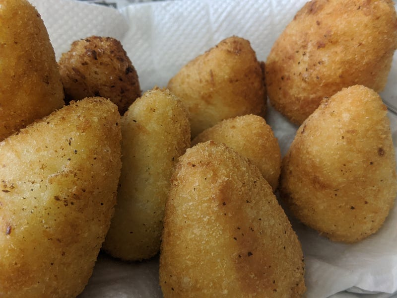
そもそもおやつなので、ご飯に食べるものではないかもしれないけれども、今回うちでは夕飯の一部として食べました。味は大変おいしくて大満足。最近シュラスコ屋にいけてないからこれも食べられなくて悲しかった気持ちが大分満たされた。
個人的にはこの食べ物は冷えてても全然おいしく食べられるのだけど、温かいうちに食べるか、冷えたあとは電子レンジのトーストモードみたいな感じで軽く温めるとおいしいかも。
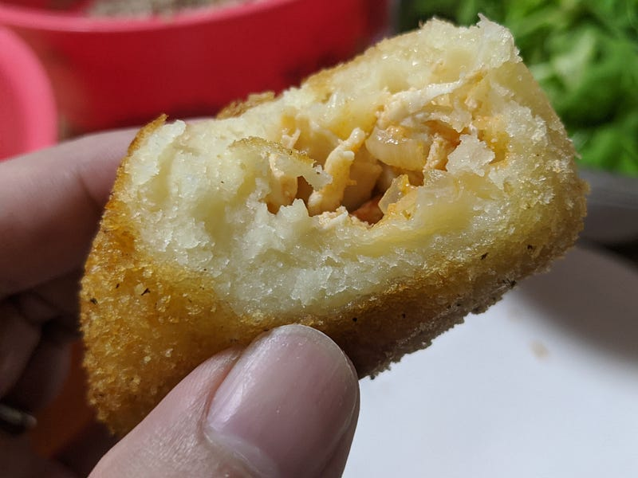
今回の反省点としては生地にダマができてしまってよけいな手間が増えたのと、具をもう少したっぷり詰める技術かなかったこと。具が多くないと味が幸せな感じにならないので、自分はあまった具をトッピングしながら食べた。
なお、前述のように大量の具が余ったので、あまりは別に作ってあったババガヌーシュ、ルッコラ、きゅうりと一緒にパンに載せてたべた。
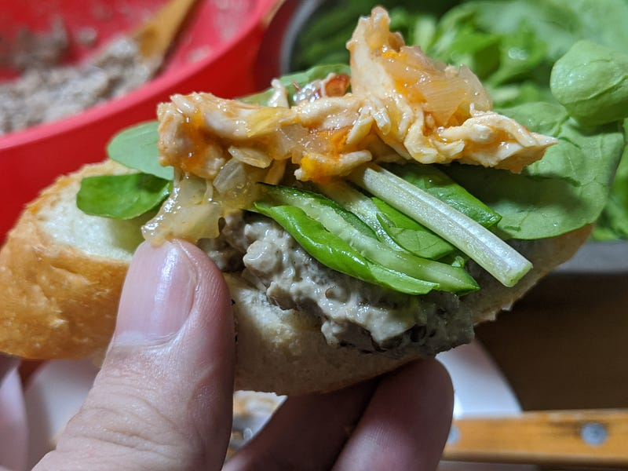
こちらも大変おいしかった。ハバガヌーシュとルッコラときゅうりはかなりお勧めの取り合わせなのでお試しあれ
ババガヌーシュ フルコース 前菜 発祥地 レバント地方 関連食文化 アルメニア、エジプト、イラク、イスラエル、ヨルダン、レバノン、パレスチナ、シリア、トルコ 主な材料 ナス、オリーブオイル テンプレートを表示 皮をむかずにナスを直火で炙る…ja.wikipedia.org
ババガヌーシュはまた別のエントリで作り方を書きます。それまではどこかでぐぐっておいて！